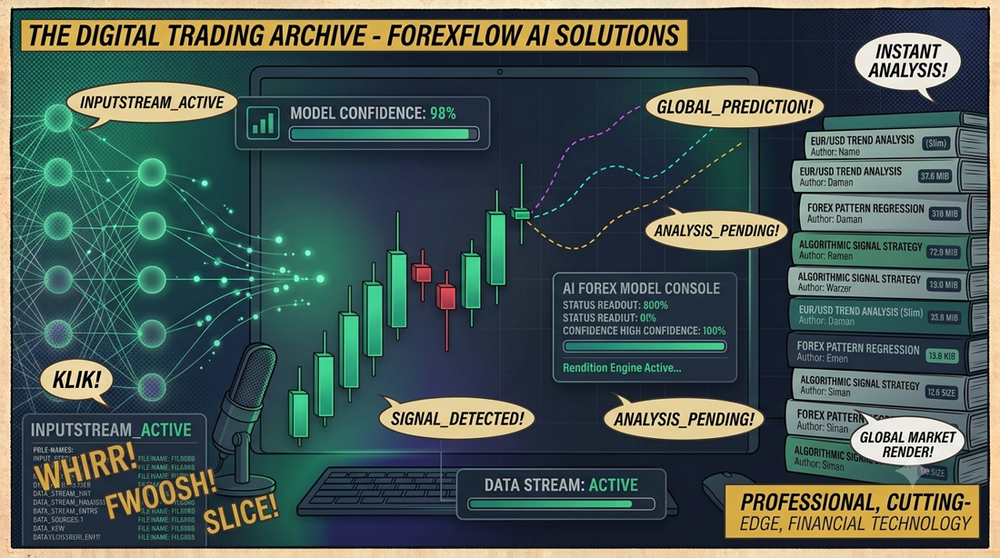

← FinanzaForexFlow AI
Analisi tecnica avanzata EUR/USD con 9 modelli previsionali, 10 indicatori tecnici in tempo reale e insight AI generati da LLM. Ensemble consensus, OpenRouter e NVIDIA NIM.
📖 Cos'è
ForexFlow AI è una piattaforma di analisi tecnica per il cambio EUR/USD, interamente browser-based. Combina 9 modelli previsionali (Linear Regression, ARIMA, XGBoost, GARCH, Monte Carlo, Exponential Smoothing, Mean Reversion, Momentum Decay ed Ensemble Consensus) con 10 indicatori tecnici (RSI, Golden/Death Cross, MACD, Bollinger Bands, Stochastic, CCI, ADX, Williams %R, ATR, Price vs EMA) su 5 timeframes. L'analisi viene arricchita da insight generati da LLM (OpenRouter o NVIDIA NIM) in italiano, con verdetto COMPRA/VENDI/ATTENDI. I dati di mercato sono fetchati live da Yahoo Finance con fallback automatico a dati simulati.
👤 A chi serve
ForexFlow AI è per trader retail e appassionati di mercati finanziari che vogliono un'analisi tecnica rapida e multi-modello senza costi. Studenti di finanza possono esplorare l'impatto di diversi algoritmi previsionali sullo stesso dataset. Sviluppatori interessati all'integrazione frontend di LLM trovano un esempio concreto di architettura multi-provider con fallback e service discovery. Chiunque cerchi un'alternativa gratuita e open source ai terminali di trading professionali.
⚙️ Come funziona
1. Dati: OHLCV candles vengono fetchati da Yahoo Finance via proxy Vite (zero CORS in dev) o allorigins.win in produzione, con fallback a random walk.
2. Segnali: 10 indicatori tecnici calcolati client-side classificano ogni metrica come Bullish/Bearish/Neutral.
3. Previsioni: 9 modelli statistici indipendenti proiettano il prezzo a t+1, t+2, t+3 periodi con range di confidenza e probabilità. I 3 migliori vengono combinati nell'Ensemble Consensus (~84% accuratezza backtest).
4. AI: Il report completo viene inviato al provider LLM configurato (OpenRouter con 26+ modelli free, o NVIDIA NIM) per un'analisi narrativa in italiano.
5. UI: Setup wizard per API key, export/import TOML della configurazione, selettore provider/model, toggle visibilità modelli, zoom/pan sul grafico.
✨ Caratteristiche
- Multi-model forecasting — 9 modelli indipendenti + Ensemble Consensus che combina i 3 migliori
- Dual LLM provider — OpenRouter (26+ modelli free) e NVIDIA NIM con switch on-the-fly
- 5 timeframes — 15m, 1h, 1d, 1w, 1mo con dati live da Yahoo Finance
- 10 indicatori tecnici — RSI, SMA crossover, MACD, Bollinger, Stocastico, CCI, ADX, Williams %R, ATR
- Grafico interattivo — Recharts con zoom, pan, toggle modelli, reference line al prezzo corrente
- Setup wizard — Onboarding guidato con discovery automatica modelli, export/import TOML
- Analisi AI in italiano — Verdetto COMPRA/VENDI/ATTENDI + livelli supporto/resistenza
- Offline-ready — Fallback automatico a dati simulati se Yahoo Finance non raggiungibile
🔮 Modelli Previsionali
Ogni modello proietta il prezzo a t+1, t+2 e t+3 periodi con prezzo target, range (low/high) e probabilità. La confidence decresce nel tempo per tutti i modelli.
| Modello | Metodologia | Accuratezza Backtest |
|---|---|---|
| Ensemble (Consensus) | Media ponderata di Linear, ARIMA e XGBoost | ~84% |
| XGBoost ML | Gradient Boosting + bias RSI | ~77% |
| ARIMA | AutoRegressive Integrated Moving Average | ~72% |
| GARCH | Volatility clustering projection | ~68% |
| Exponential Smoothing | Pesatura esponenziale dei prezzi recenti | ~65% |
| Linear Regression | Proiezione linea di trend | ~62% |
| Momentum Decay | Momentum corrente con fattore di decadimento | ~60% |
| Mean Reversion | Ritorno alla SMA a 20 periodi | ~58% |
| Monte Carlo | Media di 1000 iterazioni random walk | ~55% |
🤖 Provider AI
Due provider LLM supportati, configurabili via setup wizard o variabili d'ambiente. Almeno uno è necessario per l'analisi AI.
| Provider | Modelli Free | CORS | API Key |
|---|---|---|---|
| OpenRouter | 26+ (Llama, Gemma, Nemotron, Qwen...) | ✅ Nativo | openrouter.ai/keys |
| NVIDIA NIM | Developer tier (DeepSeek, Mistral, Llama...) | ⚠️ Proxy richiesto | build.nvidia.com |
🏗️ Architettura
┌──────────────────────────────────────────────────────┐ │ Browser │ │ ┌─────────────┐ ┌──────────────┐ ┌─────────────┐ │ │ │ ChartPanel │ │ SignalPanel │ │ ForecastCard│ │ │ └──────┬──────┘ └──────┬───────┘ └──────┬──────┘ │ │ │ │ │ │ │ ┌──────┴────────────────┴──────────────────┴──────┐ │ │ │ App.tsx │ │ │ └──┬──────────┬──────────┬──────────┬────────────┘ │ │ │ │ │ │ │ │ ┌──▼──┐ ┌───▼───┐ ┌──▼───┐ ┌──▼──────────┐ │ │ │Data │ │Analysis│ │LLM │ │Config │ │ │ │Svc │ │Svc │ │Svc │ │Svc (TOML) │ │ │ └──┬──┘ └───────┘ └──┬───┘ └─────────────┘ │ │ │ │ │ │ ┌──▼──────────────┐ ┌──▼──────────────────┐ │ │ │ Yahoo Finance │ │ OpenRouter / NVIDIA │ │ │ │ (Vite proxy) │ │ NIM API │ │ │ └─────────────────┘ └─────────────────────┘ │ └──────────────────────────────────────────────────────┘
🔒 Privacy & Sicurezza
- Zero backend — Nessun server, nessun database, tutto client-side
- API key in localStorage — Mai inviate a server terzi, solo chiamate dirette ai provider LLM
- Nessun tracking — Zero analytics, zero telemetria
- Config TOML — Export/import della configurazione in formato leggibile
⚠️ Disclaimer
Questa applicazione è a scopo educativo e dimostrativo. I segnali e le previsioni generati sono basati su modelli statistici semplificati e non costituiscono consulenza finanziaria. Il trading sul Forex comporta rischi significativi. Le performance passate non garantiscono risultati futuri.